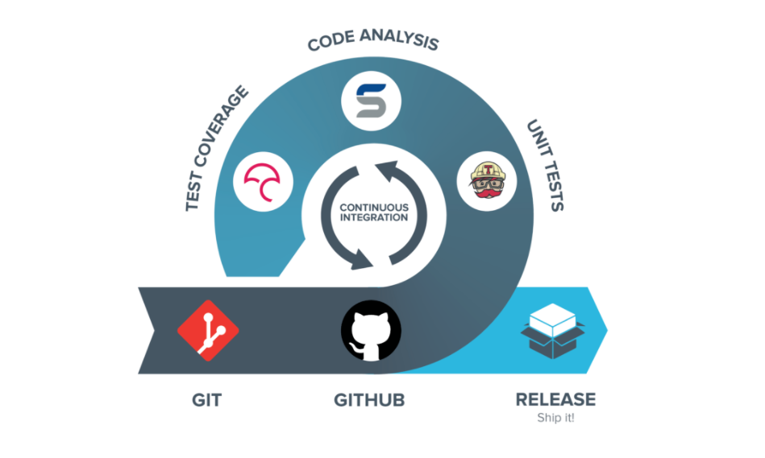

This session covers construction and destruction of class objects and other related topics. You'll also see how operator overloading works and how it can be used for convenience. We end this session with an explanation on continuous integration using CircleCI.
As the text goes on, we'll construct a class Integer that "wraps" an integer number, just for illustrative purposes.
Perform all the steps on your own too!
Constructors are used to "initialize" a new object of a class.
For example, we'll require that a newly created Integer represents the number 0.
Integer.h:
class Integer {
public:
Integer();
private:
int m_val;
};
Integer.cpp:
Integer::Integer() : m_val(0) {
// No other initialization is necessary
}
Important Note that we're using an initializer list to set the value of m_val.
Why is this better than doing explicit assignments in the constructor's body?
(think about types for which initialization differs from assignment). Read up on initializer lists on the C++ FAQ.
In addition to the default constructor, we want to be able to construct an Integer from an int variable; let's define another constructor:
Integer.cpp:
Integer::Integer(int i) : m_val(i) {}
Declare this constructor in Integer.h as well!
There's something special about this constructor (and generally all constructors that take one argument).
They define an implicit type conversion; in this case a conversion from an int to an Integer.
Try this:
void f(Integer a) { /* whatever */ }
// somewhere else:
f(3);
Read more here: Implicit conversions. There's a way of preventing this behaviour, find and test it on the above example.
Given an Integer object we'd want to be able to make new copies of it.
This is the task of the copy constructor whose definition in our case would look like this:
Integer::Integer(const Integer& that) : m_val(that.m_val) {}
See here for the ins and outs of the copy constructor and make sure it works in your code!
Now you're ready to read the C++ FAQ on constructors.
If our integer wrapper was allocating any resources like memory, network or open files, we'd have to release these upon an object's destruction. In the case of an integer we don't have to do anything though, so we leave the destructor empty:
Integer::~Integer() {}
In such a case it's not a bad idea to just leave out the declaration & definition of the destructor. This forces the compiler to synthesize a suitable destructor; an empty one in this specific case. Read more: C++ FAQ on destructors.
Another way of making copies of objects is through assignment:
Integer a{1};
Integer b{2};
b = a; // ASSIGNMENT!
For these operations an assignment operator can be used.
Integer& Integer::operator=(const Integer& that) {
if (this != &that) {
this->m_val = that.m_val;
}
return *this;
}
Declare it accordingly in the class definition & make it work. Read the following text on the anatomy of the assignment operator as well as C++ FAQ on assignment operators.
Notice that I'm returning *this in the above method.
This allows you to "chain" method invocations:
Integer& Integer::twice() {
this->m_val *= 2;
return *this;
}
// Later...
Integer i = 1;
i.twice().twice().twice(); // i should become 8
The Big Three: destructor, copy constructor, assignment operator. If your class needs either of these, it probably needs them all!
Important Make sure you understand the difference between copy construction and an assignment:
Integer a = b; or Integer a(b);a = b;, where both a and b are objects of the class Integer.Notice the constructor-part in the copy constructor name. Something is constructed. Something new is constructed. This is not the case with an assignment operator.
If necessary, you can use private or protected access on copy constructor or assignment operator to prevent copies of objects.
When no copy constructor or assignment operator is defined, the compiler implicitly synthesizes one that calls the copy constructors or assignment operators of all the data members of the class (and those of the base class).
Don't redefine these if you're happy with the default behaviour.
We can therefore simply leave out the copy constructor and the assignment operator from the Integer example.
Sometimes it is preferred to write out a complete list of operations (constructor, copy constructor, assignment, destructor) even when they are not necessary.
By doing that, programmers are reminded of the existence of these operations.
However, if the operations are declared in the class definition, an implementation for each of them must also be defined.
But what if you make a mistake (e.g., you forget to copy one of the member objects in the copy constructor)?
To prevent mistakes like that, you can use the default keyword: you can list all the operations without having to write out the definitions.
An example of the default keyword:
class Integer {
public:
// Now I do not have to define these operations!
Integer() = default;
Integer(const Integer& that) = default;
Integer& operator=(const Integer& that) = default;
~Integer() = default;
};
The assignment operator above is a specific example of an overloaded operator. You can define other overloaded operators such as:
Integer Integer::operator+(const Integer& that) const {
return Integer(this->m_val + that.m_val);
}
Which will now allow for:
Integer a = 1;
Integer b = 2;
Integer c = a + b;
and even for:
Integer d = a + b + c;
Which addition is performed first, a + b or b + c? First, try it yourself and afterwards read about it here.
Now try the following example:
const Integer a = 1;
const Integer b = 2;
Integer c = a + b;
What happens when you remove the second const keyword in the declaration of +?
Why? Read about it here. The code thus becomes the following:
Integer Integer::operator+(const Integer& that) { ... }
Some operators would be extremely useful but can not be written as member functions of the class we're writing. For instance, it would be great to have:
Integer a = 42;
std::cout << a;
But we can't extend std::cout to include operator<< that matches our Integer.
In such cases we can define helper functions that will do the right thing without being member functions of Integer.
#include <ostream>
std::ostream& operator<<(std::ostream& out, const Integer& i) {
out << i.m_val;
return out; // allow "chaining"
}
Now you can do: cout << Integer(5) << endl;. Neat huh?
The above definition of operator<< won't work unless you give it access to Integer's private parts.
This requires that you declare operator<< to be a friend of Integer to bypass access control.
Read about friend functions and make the above example work in your code.
The entire list of operators that you can overload can be found in Stroustrup's book or online. Noteworthy is the difference between postfix and prefix increment/decrement operators:
// Prefix increment, ++a
Integer& Integer::operator++() {
this->m_val++;
return *this;
}
// Postfix increment, a++
// (uses a dummy int parameter to distinguish from prefix op.)
Integer Integer::operator++(int) {
Integer original = *this;
this->m_val++;
return original;
}
Now, implement operators + (unary & binary), - (unary & binary), *, /, %, ++ (pre & post), -- (pre & post), +=, -=, *=, /=, %=, ==, !=, <, >, >=, <= for your Integer class. A unary + can be interpreted as the absolute value for your implementation.
While we're at it, read if there's a performance difference between i++ and ++i in C++.
First of all, read about iterators. You might find some information on Wiki: Iterator interesting as well.
Notice that many STL algorithms from <algorithm> like std::sort use iterators heavily.
Using them seems difficult at first sight but saves you lots of trouble in the long run.
Part of the notational burden can be hidden thanks to the auto keyword and automatic type inference.
Instead of:
for (vector<int>::iterator it = v.begin(); it != v.end(); ++it) {
...
}
we can write:
for (auto it = v.begin(); it != v.end(); ++it) {
...
}
In the last section of this session, we'll learn more about auto.
Or even better, you can use range-based for loops to make the above loop more concise:
std::vector<int> v(10);
// Later...
for (int i : v) {
cout << i << end;
}
If you want to modify values you can request the loop variable by reference:
for (int& i : v) {
i++;
}
(range-based for loops also work with auto or auto&, but this can make your code less readable.)
This should work for old C-style arrays and everything that has a .begin() and .end() that returns an iterator.
(It works with C++11 initializer lists as well if you're interested)
Continuous Integration (or "CI") is a practice in software engineering to prevent integration problems, sometimes nicely referred to as "integration hell". The general idea of CI is that a developer takes a copy of the current mainline code base and frequently integrates his/her new or changed code with that code base, while other developers working on the same code base do the same. By continuously "bringing the code together" (i.e., integrating), developers spot integration issues early on and fix them as quickly as they arise. This way, more serious integration problems later on in the project are avoided and the general quality of the project is improved.

Some essential tools to do this are:
a code repository: using a revision control system such as Git are a good choice to hold an official code repository that contains the software project. All artifacts for building the project should be contained in the repository. The mainline (usually the "master" or "main" branch) of a code repository is the place for the working version of the project. Of course, there can be additional concurrent branches that explore certain extra features, but the mainline should always contain a working version of the software project. A lot of times you see a master branch and a develop branch where the latter one is continuously updated with new features coming from the developers and the former one only gets updates (i.e., a new "release") when the developers' branch has useful new features and has been proven to be stable. To minimize the risk of integration problems, developers should regularly push to the code repository (i.e., merge their new features with the official repo).
automation of the build: the software should be able to be built by a single command. Build systems such as "make" or "CMake" are common solutions for this. The building of the project should not only make the binaries, but also generate documentation, website pages, ... All different parts that belong the project.
testing: testing (e.g., unit tests, scenario tests, ...) should conform that the software project behaves as it is expected to behave.
automation of the build (bis): whenever a developer pushes a commit, this entire software project should be built and tested to see if the new feature causes some integration problems with commits coming from other developers. To this end, a CI server is used. Popular choices are the open-source Jenkins, CircleCI or GitHub Actions. A CI server "watches" a given code repository and whenever a new commit is pushed, it automatically builds the entire project, tests it if tests are provided, and could even deploy it. The results of the build and tests are visible for anyone in the project, so the developers are alarmed when something is going wrong with their code base and action should be taken.
As this is only a limited overview of the concept of CI, take a look at the Wikipedia page which tells the story very well.
For your project this semester you will need to use a CI server to automatically try building your project for every pushed commit, to make sure that your project still compiles successfully on the reference platform.
To already practice setting this up, you will also need to configure it for this session's exercises.
You are allowed to use any CI platform, as long as it supports showing the build results for each commit on GitHub and you provide access to the build configuration and detailed results.
CircleCI is a recommended option for this however, since their free plan allows for considerably more than enough weekly builds for this course, and it’s easy to set up.
As it supports Docker images for building and testing your code, it can be used with virtually any programming language, compiler and project toolchain.
The configuration file for CircleCI is included as part of your repository (in .circleci/config.yml), so everything is conveniently located in one place, and it's trivial to have a different configuration for each branch or to update the configuration when your project has new dependencies.
You can set up CircleCI for your exercise repository using the following steps:
Accept one of the assignments below to create a new repository in the AP-Lab-Sessions organization.
Create a simple CMake project with a CMakelists.txt file in the root of the repository.
Add the following file and contents to the repository and modify it if necessary:
.circleci/config.yml:
version: 2.1
jobs:
build:
resource_class: small
docker:
- image: ubuntu:22.04
steps:
- checkout
- run: apt update
- run: DEBIAN_FRONTEND=noninteractive TZ=Europe/Brussels apt install -y gcc g++ libsfml-dev cmake git
- run: mkdir -p build
- run: cd build && cmake ..
- run: cd build && make
- run: cd build && make install
Go to https://circleci.com/login/ and sign in using your GitHub account.
When prompted to select an organization, select AP-Lab-Sessions from the list.
Select the repository corresponding to the exercise under 'Select Project' and specify that you already have a .circleci/config.yml file under your master branch.
CircleCI should now automatically start building your code and continue doing so every time you push a new commit.
Check if the build is successful. If it's not, you might have to make some changes to your CMakeLists.txt or .circleci/config.yml files.
Go the assignment: https://classroom.github.com/a/M6AjVsT-
Go to the assignment: https://classroom.github.com/a/r5bZN4Dc
Go to the assignment: https://classroom.github.com/a/Ww6wuYcv